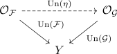
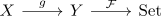
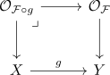

straightening-unstraightening for set
Motivation
objectwise
Suppose you want to describe functors
for a set $Y$. Here we can consider $Y$ as 1-category with no nontrivial morphisms outside of the identity.
Here we consider $\mathrm{Fun}(Y,\mathrm{Set})$ as (1,1)-category, so we will be fine to also consider the (natural) isomorphism between the functors. Secretly we already know, that
since such a functor is precisely given by indexing sets with $Y$.
So let $\mathcal{F}: Y \rightarrow \mathrm{Set}$ be a functor. Then define $\mathcal{O}_\mathcal{F}$ as category containing
- pairs $(\mathcal{F}(y), y)$ as objects, where $\mathcal{F}(y)$ is the set.
- no nontrivial morphisms.
Then functor
contains the same datum as the map
In other words, to define a map we can map each element in the target to its fibre.
natural transformation
But we also want to describe (natural) transformations betwen two functors. Assume we have two functors
We know/expect that a natural transformation is given by maps $\eta(y): \mathcal{F}(y) \rightarrow \mathcal{G}(y)$.
So we want to define a morphism
which we will define as certain map over $Y$

Here one natural way is to define $\mathrm{Un}(\eta)$ as morphism encoding
precomposition
Suppose we have a map $g: X \rightarrow Y$. Then for any functor $\mathcal{F}: Y \rightarrow \mathrm{Set}$ we can consider the composition

Then this functor is of course given by
Hence using the unstraightening construction we get
But this is also given by
and an explicit calculation shows, that this is precisely the pullback
